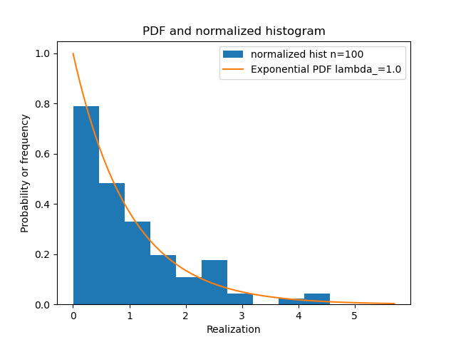
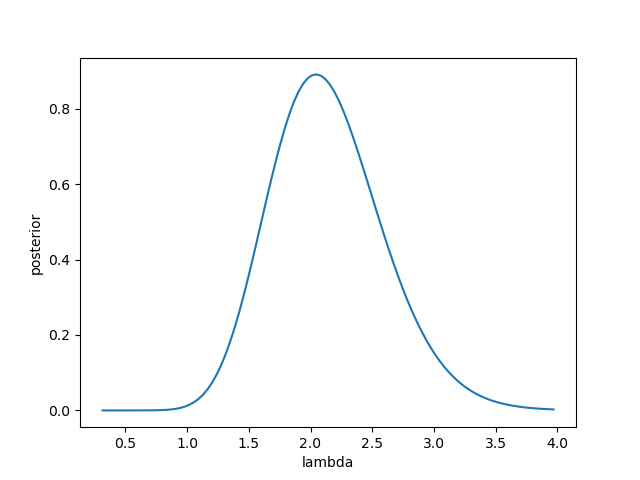

bayesml.exponential package#
モジュール内容#
このモジュールではガンマ事前分布を用いた指数分布を利用できます。

確率的データ生成モデル#
確率的データ生成モデルは以下の通りです：
\(x \in \mathbb{R}_{\geq 0}\): データ点
\(\lambda \in \mathbb{R}_{>0}\): パラメータ
事前分布#
事前分布は以下の通りです：
\(\alpha_0 \in \mathbb{R}_{>0}\): ハイパーパラメータ
\(\beta_0 \in \mathbb{R}_{>0}\): ハイパーパラメータ
\(\Gamma(\cdot): \mathbb{R}_{>0} \to \mathbb{R}_{>0}\): ガンマ関数
事後分布#
事後分布は以下の通りです：
\(x^n = (x_1, x_2, \dots , x_n) \in \mathbb{R}_{\geq 0}^n\): 与えられたデータ
\(\alpha_n \in \mathbb{R}_{>0}\):ハイパーパラメータ
\(\beta_n \in \mathbb{R}_{>0}\): ハイパーパラメータ
ここでハイパーパラメータの更新式は以下で与えられます
予測分布#
予測分布は以下の通りです：
\(x_{n+1} \in \mathbb{R}_{\geq 0}\): 新たなデータ点
\(\kappa_\mathrm{p} \in \mathbb{R}_{>0}\): 事後分布のハイパーパラメータ
\(\lambda_\mathrm{p} \in \mathbb{R}_{>0}\): 事後分布のハイパーパラメータ
ここで、パラメータは事後分布のハイパーパラメータから以下のように求められます:
GitHubスターのお願い#

クラス#
- class bayesml.exponential.GenModel(lambda_=1.0, h_alpha=1.0, h_beta=1.0, seed=None)#
ベースクラス:
Generative確率的データ生成モデルと事前分布
- パラメータ:
- lambda_float, optional
正の実数、デフォルトでは1.0
- h_alphafloat, optional
正の実数、デフォルトでは1.0
- h_betafloat, optional
正の実数、デフォルトでは1.0
- seed{None, int}, optional
numpy.random.default_rng() を初期化するシード値です。デフォルトでは None
メソッド
事前分布からパラメータを生成します。
gen_sample(sample_size)確率的データ生成モデルからサンプルを生成します。
GenModel の定数を取得します。
事前分布のハイパーパラメータを取得します。
確率的データ生成モデルのパラメータを取得します。
load_h_params(filename)h_paramsにハイパーパラメータをロードします。
load_params(filename)Load the parameters saved by
save_params.save_h_params(filename)python
pickleモジュールを使ってハイパーパラメータを保存します。save_params(filename)python の
pickleモジュールを使ってパラメータを保存します。save_sample(filename, sample_size)生成されたサンプルを NumPy
.npzフォーマットで保存します。set_h_params([h_alpha, h_beta])事前分布のハイパーパラメータを設定します。
set_params([lambda_])確率的データ生成モデルのパラメータを設定します。
visualize_model([sample_size, hist_bins])確率的データ生成モデルと生成されたサンプルを可視化します。
- get_constants()#
GenModel の定数を取得します。
このモデルは定数を持ちません。 したがって、この関数は emtpy dict
{}を返します。- 返り値:
- constantsan empty dict
- set_h_params(h_alpha=None, h_beta=None)#
事前分布のハイパーパラメータを設定します。
- パラメータ:
- h_alphafloat, optional
正の実数、デフォルトではNone
- h_betafloat, optional
正の実数、デフォルトではNone
- get_h_params()#
事前分布のハイパーパラメータを取得します。
- 返り値:
- h_paramsdict of {str: float}
"h_alpha":self.h_alphaの値"h_beta":self.h_betaの値
- gen_params()#
事前分布からパラメータを生成します。
生成された値は``self.lambda_``に設定されます。
- set_params(lambda_=None)#
確率的データ生成モデルのパラメータを設定します。
- パラメータ:
- lambda_float, optional
正の実数、デフォルトではNone
- get_params()#
確率的データ生成モデルのパラメータを取得します。
- 返り値:
- paramsdict of {str:float}
"lambda_":self.lambda_の値です。
- gen_sample(sample_size)#
確率的データ生成モデルからサンプルを生成します。
- パラメータ:
- sample_sizeint
正の整数
- 返り値:
- xnumpy ndarray
サイズが「sammple_size」で、要素が正の実数である1次元配列です。
- save_sample(filename, sample_size)#
生成されたサンプルを NumPy
.npzフォーマットで保存します。キーワード「x」付きでaNpzFileとして保存されます。
- パラメータ:
- filenamestr
サンプルを保存するファイル名。ない場合は
.npzが追加されます。- sample_sizeint
正の整数
- visualize_model(sample_size=100, hist_bins=10)#
確率的データ生成モデルと生成されたサンプルを可視化します。
- パラメータ:
- sample_sizeint, オプション
正の整数、デフォルトは100
- hist_binsfloat, optional
正の浮動小数点数、デフォルト値は10
例
>>> from bayesml import normal >>> model = normal.GenModel() >>> model.visualize_model() lambda_:1.0
- class bayesml.exponential.LearnModel(h0_alpha=1.0, h0_beta=1.0)#
ベースクラス:
Posterior,PredictiveMixin事後分布と予測分布
- パラメータ:
- h0_alphafloat, optional
正の実数、デフォルトでは1.0
- h0_betafloat, optional
正の実数、デフォルトでは1.0
- 属性:
- hn_alphafloat
正の実数
- hn_betafloat
正の実数
- p_kappafloat
正の実数
- p_lambdafloat
正の実数
メソッド
対数周辺尤度の計算
予測分布のパラメータを計算します。
estimate_interval([credibility])パラメータの信頼区間
estimate_params([loss, dict_out])与えられた基準の下で、確率的データ生成モデルのパラメータを推定します。
fit(x)モデルをデータに当てはめます。
LearnModel の定数を取得します。
事後分布のハイパーパラメータの初期値を取得します。
事後分布のハイパーパラメータを取得します。
予測分布のパラメータを取得します。
load_h0_params(filename)h0_paramsにハイパーパラメータをロードします。
load_hn_params(filename)hn_paramsにハイパーパラメータをロードします。
make_prediction([loss])与えられた基準の下で、新しいデータ点を予測します。
overwrite_h0_params()事後分布のハイパーパラメータの初期値を学習した値で上書きします。
pred_and_update(x[, loss])逐次的に新しいデータ点を予測し、事後分布を更新します。
predict()次のデータ点を予測します。
reset_hn_params()事後分布のハイパーパラメータを初期値に戻します。
save_h0_params(filename)python
pickleモジュールを使ってハイパーパラメータを保存します。save_hn_params(filename)python
pickleモジュールを使ってハイパーパラメータを保存します。set_h0_params([h0_alpha, h0_beta])事後分布のハイパーパラメータの初期値を設定します。
set_hn_params([hn_alpha, hn_beta])事後分布のハイパーパラメータの更新値を設定します。
訓練データを使って事後分布のハイパーパラメータを更新します。
パラメータの事後分布を可視化します。
- get_constants()#
LearnModel の定数を取得します。
このモデルは定数を持ちません。 したがって、この関数は emtpy dict
{}を返します。- 返り値:
- constantsan empty dict
- set_h0_params(h0_alpha=None, h0_beta=None)#
事後分布のハイパーパラメータの初期値を設定します。
- パラメータ:
- h0_alphafloat, optional
正の実数、デフォルトではNone
- h0_betafloat, optional
正の実数、デフォルトではNone
- get_h0_params()#
事後分布のハイパーパラメータの初期値を取得します。
- 返り値:
- h0_paramsdict of {str: float}
"h0_alpha":self.h0_alphaの値"h0_beta":self.h0_betaの値
- set_hn_params(hn_alpha=None, hn_beta=None)#
事後分布のハイパーパラメータの更新値を設定します。
- パラメータ:
- hn_alphafloat, optional
正の実数、デフォルトではNone
- hn_betafloat, optional
正の実数、デフォルトではNone
- get_hn_params()#
事後分布のハイパーパラメータを取得します。
- 返り値:
- hn_paramsdict of {str: float}
"hn_alpha":self.hn_alphaの値"hn_beta":self.hn_betaの値
- update_posterior(x)#
訓練データを使って事後分布のハイパーパラメータを更新します。
- パラメータ:
- xnumpy.ndarray
すべての要素は正の実数でなければなりません。
- estimate_params(loss='squared', dict_out=False)#
与えられた基準の下で、確率的データ生成モデルのパラメータを推定します。
- パラメータ:
- lossstr, optional
ベイズリスク関数の基礎となる損失関数、デフォルトは "squared"。この関数は "squared"、"0-1"、"abs"、"KL "をサポートしています。
- dict_outbool, optional
If
True, output will be a dict, by defaultFalse.
- 返り値:
- estimator{float, None, rv_frozen}
与えられた損失関数の下での推定値。存在しない場合は None が返されます。損失関数が "KL" の場合、事後分布そのものが scipy.stats の rv_frozen オブジェクトとして返されます。
- estimate_interval(credibility=0.95)#
パラメータの信頼区間
- パラメータ:
- credibilityfloat, optional
区間がパラメータを含む事後確率，デフォルトは0.95．
- 返り値:
- lower, upper: float
区間の下限と上限
- visualize_posterior()#
パラメータの事後分布を可視化します。
例
>>> from bayesml import exponential >>> gen_model = exponential.GenModel(lambda_=2.0) >>> x = gen_model.gen_sample(20) >>> learn_model = exponential.LearnModel() >>> learn_model.update_posterior(x) >>> learn_model.visualize_posterior()

- get_p_params()#
予測分布のパラメータを取得します。
- 返り値:
- p_paramsdict of {str: float}
"p_kappa":self.p_kappaの値"p_lambda":self.p_lambdaの値
- calc_pred_dist()#
予測分布のパラメータを計算します。
- make_prediction(loss='squared')#
与えられた基準の下で、新しいデータ点を予測します。
- パラメータ:
- lossstr, optional
ベイズリスク関数の基礎となる損失関数、デフォルトは "squared"。この関数は "squared"、"0-1"、"abs"、"KL "をサポートしています。
- 返り値:
- Predicted_value{float,None,rv_frozen}
指定された損失関数における予測値です。損失関数が「KL」の場合、事後分布そのものが scipy.stats の rv_frozen オブジェクトとして返されます。
- pred_and_update(x, loss='squared')#
逐次的に新しいデータ点を予測し、事後分布を更新します。
- パラメータ:
- xfloat
正の実数
- lossstr, optional
ベイズリスク関数の基礎となる損失関数、デフォルトは "squared"。この関数は "squared"、"0-1"、"abs"、"KL "をサポートしています。
- 返り値:
- Predicted_value{float,None,rv_frozen}
指定された損失関数における予測値です。損失関数が「KL」の場合、事後分布そのものが scipy.stats の rv_frozen オブジェクトとして返されます。
- calc_log_marginal_likelihood()#
対数周辺尤度の計算
- 返り値:
- log_marginal_likelihoodfloat
対数周辺尤度
- fit(x)#
モデルをデータに当てはめます。
この関数は以下の関数のラッパーです：
>>> self.reset_hn_params() >>> self.update_posterior(x) >>> return self
- パラメータ:
- xnumpy.ndarray
すべての要素は正の実数でなければなりません。
- 返り値:
- selfLearnModel
The fitted model.
- predict()#
次のデータ点を予測します。
この関数は以下の関数のラッパーです：
>>> self.calc_pred_dist() >>> return self.make_prediction(loss="squared")
- 返り値:
- predicted_value{float,None}
二乗誤差関数に基づく予測値。